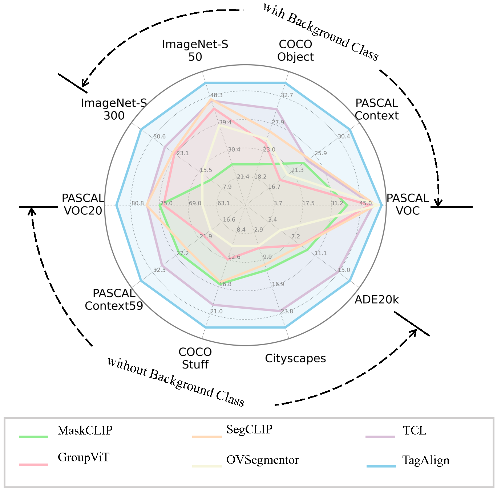

Abstract
The crux of learning vision-language models is to extract semantically aligned information from visual and linguistic data. Existing attempts usually face the problem of coarse alignment, e.g., the vision encoder struggles in localizing an attribute-specified object. In this work, we propose an embarrassingly simple approach to better align image and text features with no need of additional data formats other than image-text pairs. Concretely, given an image and its paired text, we manage to parse objects ( e.g., cat) and attributes (e.g., black) from the description, which are highly likely to exist in the image. It is noteworthy that the parsing pipeline is fully automatic and thus enjoys good scalability. With these parsed semantics as supervision signals, we can complement the commonly used image-text contrastive loss with the multi-tag classification loss. Extensive experimental results on a broad suite of semantic segmentation datasets substantiate the average improvement of our framework over existing alternatives. Furthermore, the visualization results indicate that attribute supervision makes vision-language models accurately localize attribute-specified objects.
Pipeline

Experiments

BibTeX
@article{liu2023tagalign,
title={TagAlign: Improving Vision-Language Alignment with Multi-Tag Classification},
author={Liu, Qinying and Zheng, Kecheng and Wei, Wu and Tong, Zhan and Liu, Yu and Chen, Wei and Wang, Zilei and Shen, Yujun},
journal={arXiv preprint arXiv:2312.14149},
year={2023}
}